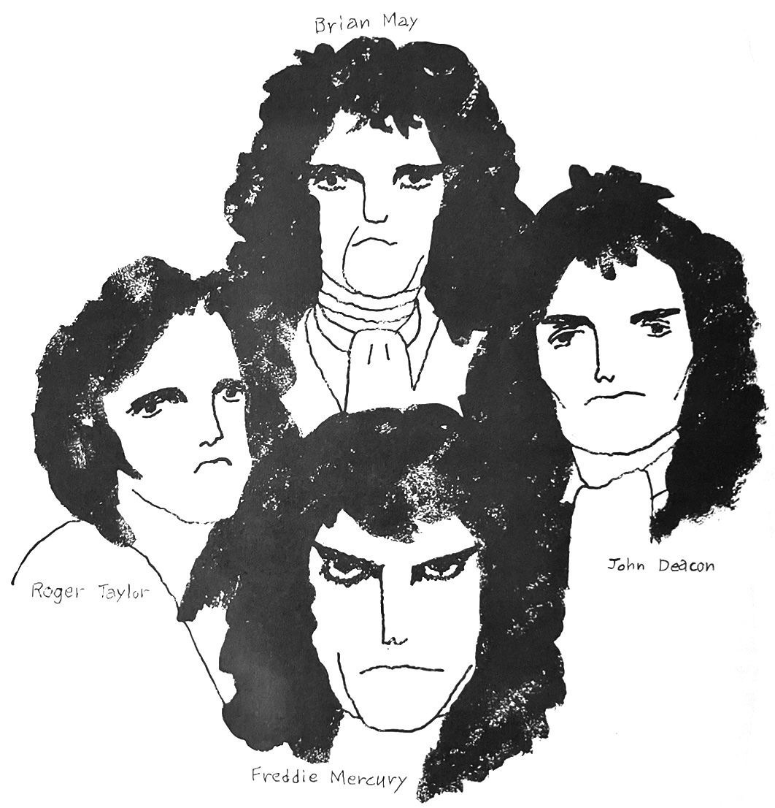

Vol. 6 — Winter 1977

There's a small section on the winter fan club gathering, some odd fanart, and a story on an early Japanese Queen tribute band named "Wink". The guitarist notes that "since Brian is a scientist, I'm not in his league". He also notes that he's using a Greco BM-900 Red Special replica guitar, which was an early Japanese Red Special replica that was produced without Brian's knowledge. Brian caught wind of this sometime in the 80s and reached out to the company to collaborate, only to be ignored (a very Japanese response). Eventually Brian began producing his own line of Red Special replicas.
A Day at the Races seems to be a polarizing LP for the Japanese fandom at this point—there are a lot of letters and chatter about Queen's new "pop" direction, and a lot of fans are disappointed with the perception that they're abandoning their heavier sound. Meanwhile, the fan from the prior issue who wrote about a missed connection with a foreign man who looked like Roger writes in again to report that in response, they were sent an envelope full of razorblades.
The pictures featured on the cover are going on two years old by now.
te wo toriatte: Let's Go Hand-in-Hand by Tenpei Matsubayashi